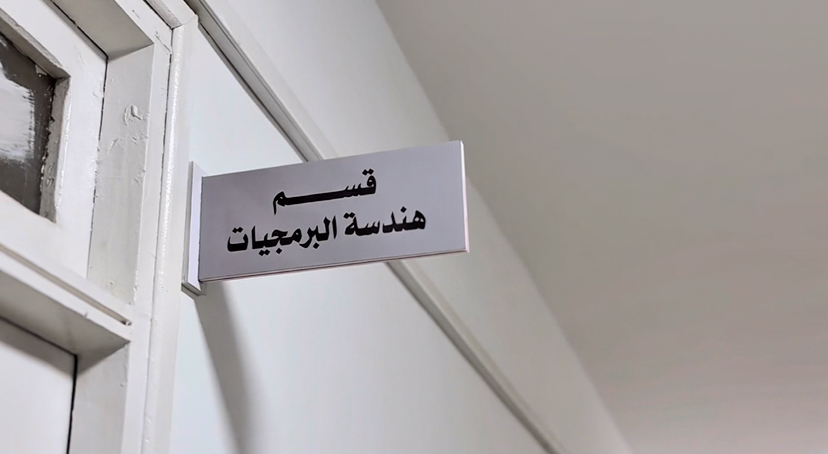
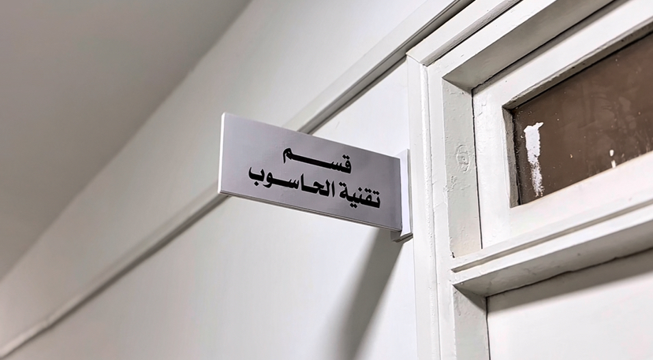

Departments
Department of Software Engineering
Department of Computer Technology

In recent years, the college has been distinguished by its active participation in a number of
scientific and technical conferences and has contributed significantly to organizing and
hosting many specialized workshops.
Among the most prominent of these participations are: National Technology Day,
the Technology Exhibition, and Culture Day, in addition to organizing internal workshops
aimed at developing students' technical skills, such as the Python programming language
learning workshop, the Adobe Photoshop design training workshop, and other activities that
reflect the college's interest in practical aspects alongside academic aspects.
With semester classification, students can pursue postgraduate studies at the university as the college continues to pursue academic and technical excellence.